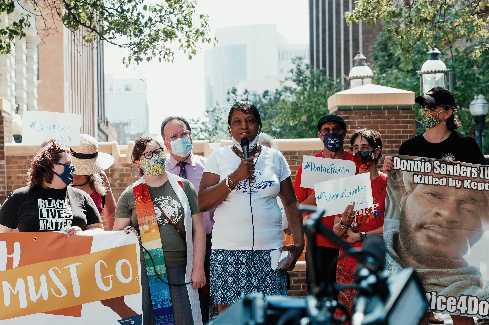
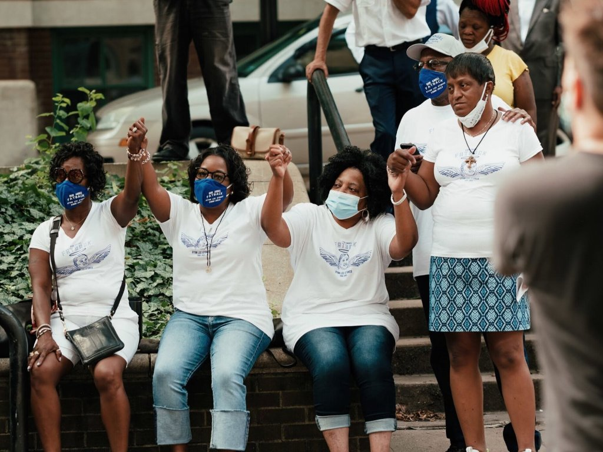

Kansas City area moms who lost sons to police violence are still searching for answers
By Celisa Calacal and Joseph Jungermann
August 4, 2020
On July 28, 2013, Ryan Stokes and his friends went to the Power & Light District in downtown Kansas City. It was a Saturday night in the middle of summer, and they planned to meet up with friends.
As the night wound down and the bars closed, a drunk man accused one of Stokes' friends of stealing his phone. Police officers initiated a foot chase. Everyone ran, including Stokes. The chase ended at the parking lot when an officer fired two shots into Stokes' back. The 24-year-old was unarmed.
Narene Stokes, his mother, drove to Power & Light after hearing what had happened from her son's friend. Yellow caution tape was roped around the parking lot. She tried asking officers about what had happened, but got little information.
In the seven years since, she still has many questions that have gone unanswered.
The Stokes family is not alone. Since Ryan Stokes died in 2013, 265 people have been shot and killed by law enforcement agencies in Kansas and Missouri — 30 by the Kansas City, Missouri, Police Department. Their deaths have left behind mothers, sisters, children, friends and family whose lives have been uprooted by sudden loss.
The Beacon spoke with several women who lost loved ones to police violence in the greater Kansas City metro area, on both sides of the state line. Many of them are still fighting for justice years later — from greater transparency to changes in policing — though they are still left with questions.
At a July rally gathering the families who lost loved ones to police violence, women spoke out about their frustrations with local police and the changes they want to see in Kansas City.
"We want to know the truth," said Nasha Green, a cousin of Dantae Franklin, a 24-year-old Black man who was fatally shot by the KCPD in 2017. "We want to know what happened."
The problem is systemic
The Albers family had plans to have dinner with friends in Overland Park on Jan. 20, 2018. But 17-year-old John Albers stayed home.
Almost as soon as his parents left a little after 5 p.m., Albers began posting alarming messages on social media, prompting his friends to call 911. Two Overland Park police cars arrived on the scene. One officer, Clayton Jenison, positioned himself in the front yard.
As the garage door opened, with Albers backing out of the driveway, Jenison fired twice into the vehicle. As the car began to spin out, Jenison fired 11 more shots into the car.
"We left the house at 5:10 p.m.," said Sheila Albers, John's mother. "John was dead by 5:50 p.m."
In her family's attempts to learn about what occurred that evening, she said, the Overland Park Police Department has never offered straight answers nor provided any documents related to her son's death. Reports from the department say that John Albers was driving "rapidly" toward the officer.
But footage from two dashcam videos and one neighborhood security video, combined with an analysis conducted by the family's attorney, dispute that narrative.
A month later, Johnson County deemed the shooting justified, saying the officer had reason to fear for his life. In March, Jenison left the Police Department with a $70,000 severance package.
"Real justice, for me, would have been the city being open and honest about the events that night," Sheila Albers said, adding that she wants Jenison to have his license revoked.
That same year, Sheila Albers founded the group JOCO United to improve training and transparency within the Police Department. Among the group's pushes for reform is the implementation of a civilian oversight board to oversee cases of police misconduct in Overland Park.
This January, JOCO United pushed for House Bill 2424, which would have changed Kansas open records laws to release records any time an officer is involved in a fatal shooting. The bill died in committee.
"What it does is holds people accountable," Sheila Albers said of the bill. "And that's what we have not seen. We have had zero accountability in relationship to John's death."
A recent Beacon analysisof the Overland Park Police Department's use-of-force policies found that the department only includes two of the 8 Can't Wait policies. Since that story ran in July, the OPPD changed its policy on firing into a moving vehicle. Officers are now prohibited from shooting "at or from a moving vehicle unless someone inside the vehicle is using or threatening lethal force against an officer or another person by means other than the vehicle itself. The only exception to this policy is in an apparent act of terrorism when the vehicle is being used as a weapon of mass destruction." The department also announced that all officers will receive crisis intervention training.
Sheila Albers said her push to bring attention to her son's death and demand changes from the OPPD shows that police violence is not restricted to big cities.
"It's happening in affluent suburbs, just as well as the urban core," she said. "And the problem is systemic."
When the Albers family adopted 18-month-old John from Minsk, Belarus, he had white-blond hair and icy blue eyes. He sometimes struggled with his sense of self, his mother said.
"They robbed him of the rest of his life," Albers said. "And they robbed us of the opportunity to see him work through those struggles and become a healthy, happy person."
'I want them to know our kids' names'
It was a dark, wet evening on May 25, 2019, when 30-year-old Terrence Bridges and his girlfriend came home from a family gathering. A domestic argument erupted later that night.
According to Jackson County Prosecuting Attorney Jean Peters Baker's Use of Force Protocol Statement, Bridges' girlfriend fled the couple's Kansas City residence to a neighboring house, asking three witnesses to call the police because Bridges had a gun.
When three KCPD officers arrived, the girlfriend said Bridges had beaten her and stolen her vehicle and was headed to the bus station at 11th Street and Troost Avenue.
An officer soon spotted Bridges walking past the couple's residence. Seventeen seconds later, the officer fired a fatal shot in the left side of Bridges' chest. There was no conversation before the officer discharged the weapon, and the officer found no weapon on Bridges, according to the Jackson County prosecutor's office.
"He killed my baby for nothing. They know this, though. Terrence didn't pose a threat," said Rotonya McGee, Terrence Bridge's mother.
Since his death in May 2019, 11 other Black men have been shot and killedby police in Missouri. According to a Beacon analysis of data from FatalEncounters.org, a disproportionate number of Black people have been shot and killedby police.
In the prosecuting attorney's statement, the officer reported Bridges had his hands in the front pocket of his hoodie and was a few feet away from the officer. The officer said Bridges took a few steps toward him and pulled his hands out of his pockets. He said he thought Bridges had a gun.
The Use of Force Committee determined there was a lack of evidence and facts to support charges against the officer, and Missouri state law offers protections for officers who use a heightened level of force when they reasonably believe the use of force is necessary.
McGee rejects the prosecuting attorney’s decision in her son's case.
"They should be punished for what they do. They shouldn’t be allowed to kill nobody and go back to work and eat and laugh and talk about it," McGee said.
"We're going to keep screaming, 'No justice, no peace' for all these babies all around the world. I want Terrence's name to be heard just like George Floyd. I want them to know what's going on with the kids that got killed in Kansas, nobody is saying nothing about them. I want them to know our kids' names, too."
'He was a good young man'
In the weeks and months following Ryan Stokes' death, the Kansas City Police Department said the 24-year-old Black man was a thief who had a gun. The department stated he did not comply with and resisted officers' orders to drop his weapon. Officer William Thompson, who fired the two shots that killed Stokes, said he gave numerous verbal warnings before firing.
But the police narrative was questioned after a KCUR investigationand a former Kansas City police officerwho was first on the scene revealed that Stokes did not steal a cellphone, was not carrying a gun, was not threatening officers and did not hear any verbal warnings from Thompson.
"Why did they say that Ryan had a gun and he didn't?" Narene Stokes said. "We all start knowing that that wasn't true."
In October 2013, a grand jury chose not to indict Thompson. He and another officer involved in Ryan Stokes' death later received medals from the Board of Police Commissioners; the award was rescinded last year, though both officers still work in the department. This year, a federal judge granted Thompson immunity.
Narene Stokes still questions the lack of adequate warnings before Thompson fired his gun.
"Seems like they’re trained for that, but isn't there another way to go about it than just shooting them down or holding them down, choking them, killing them?" she said. "I just don't get it."
The Stokes family hopes for improvements in KCPD police training, particularly with foot pursuits. Cyndy Short, a trial lawyer at McCallister law firm representing the Stokes family, said that prior to July 28, 2013, Thompson had mainly worked as a desk officer and was therefore not adequately trained to handle a foot pursuit after not being in the field for nine years.
The Stokes family said they did not appreciate the way the department spoke to the family about Ryan Stokes' death, and they want the department to change the way officers notify families of those killed by police.
Narene Stokes says Ryan Stokes, her youngest child and only son, was the man of the family. He loved playing sports and bringing everyone together.
"He actually listened to me and tried to keep his head above the water," she said. "He was a good kid. He was a good young man."